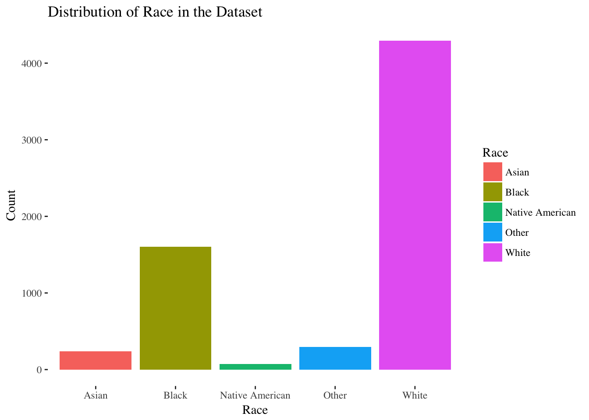
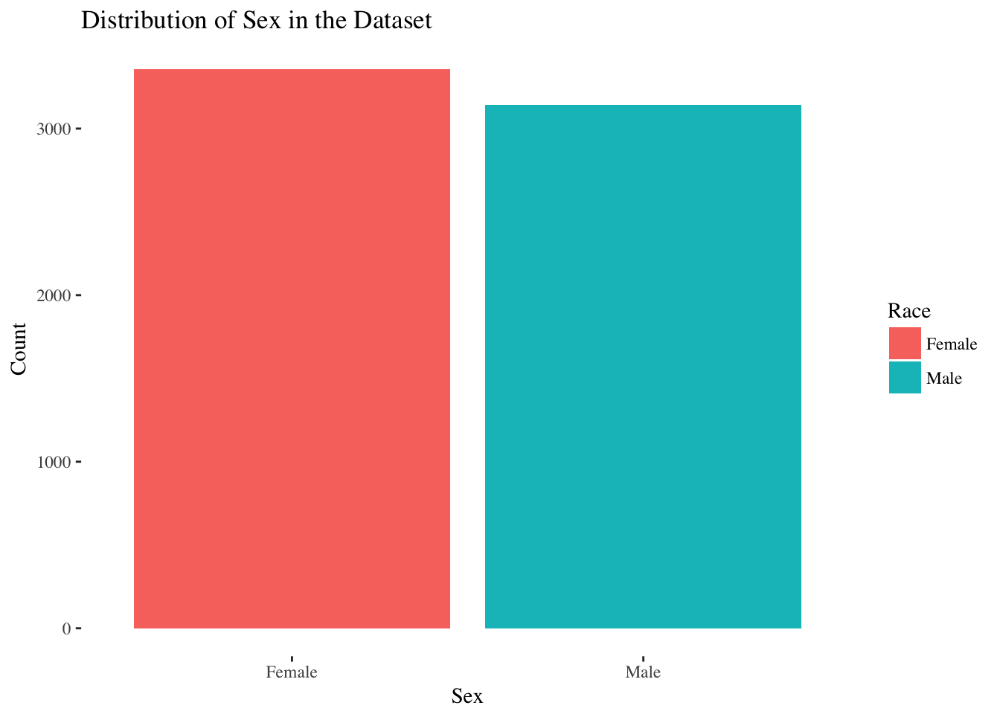
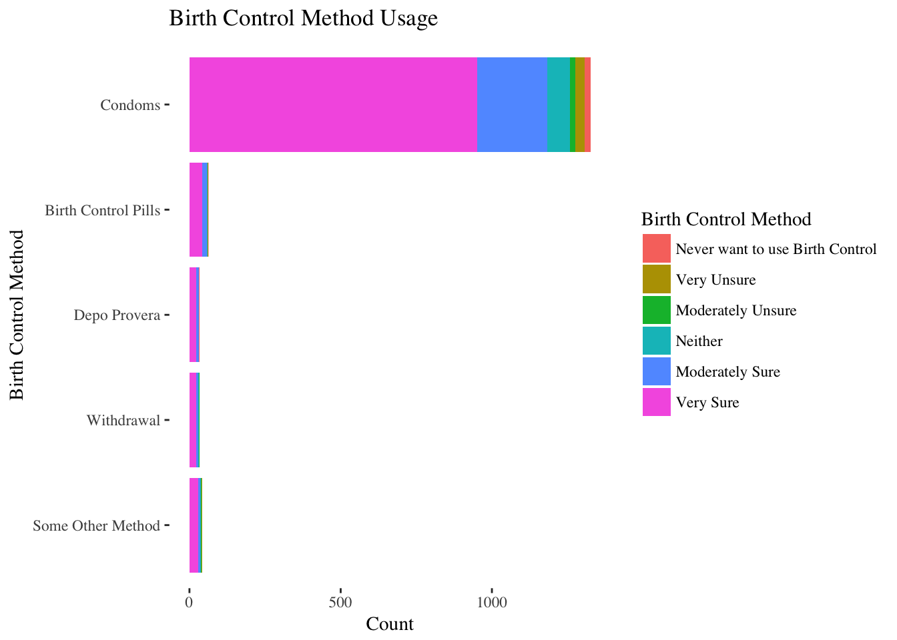
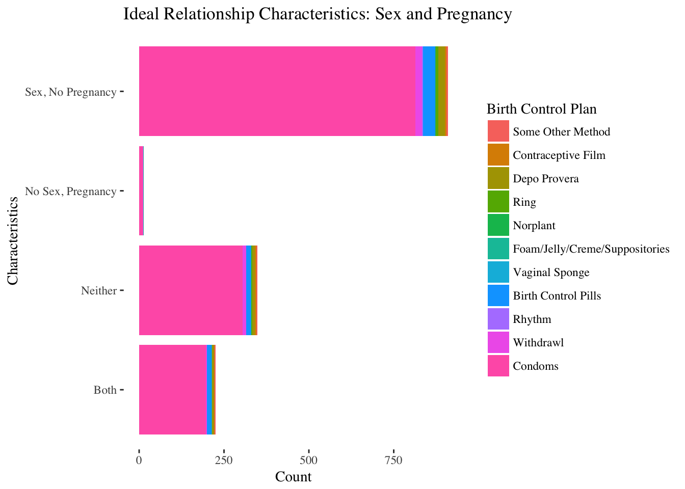

Teen Sexual Health at the Turn of the Century
Data Visualization (QMSS 4063)
Final Project
Contributors: Michelle Grushko, Zach Heinemann, Meredith Meeks, Becca Portman

Introduction
This page is an exploration of the data contained in Wave 1 of the National Longitudinal Study of Adolescent to Adult Health (Add Health), which is a nationally representative sample of students in grades 7-12 in the 1994-1995 school year. We focused on teen sexual health behaviors and perceptions, placing the survey in context through social network analysis, population maps, and state-level trends in teen health outcomes. Because much of the data in Add Health is not publicly available, we utilized census data to add a geospatial aspect as well as national health data to compare trends in the survey with trends across the U.S.
Exploratory Data Analysis
Graph 1: This graph portrays the distribution of race in the dataset. As you can see, most responders where white, followed by black, then other. 
Graph 2: This graph shows the distribution of sex in the dataset. There are more females than males, but only slightly so. 
Graph 3: This graph shows birth control method usage. The y-axis shows the method of birth control, and the x-axis shows the count, stratified by the respondent’s birth control plan. Most people say they are very sure that they want to use birth control, followed by ‘moderately sure.’ Additionally, most individuals use condoms as their birth control method. This sexual health portion of the dataset was administered to individuals ages 15 and up, so it was interesting to us that relatively few individuals were using birth control pills.

Graph 4: This graph shows the characteristics of a respondent’s ideal relationship, pertaining to having sex and getting pregnant. These characteristics are then stratified by the method of birth control used. Most individuals report wanting sex but no pregnancy in a relationship, as expected. Interestingly, some individuals reported wanting no sex but pregnancy, which is obviously impossible. 